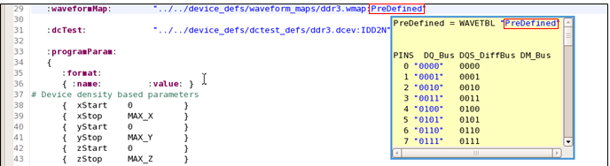
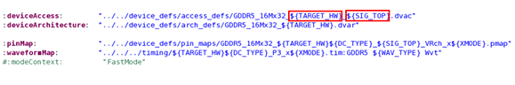
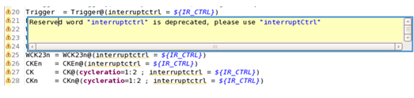

Features for the editor of MTP-EWC
To ease and speed up your MTP programming, the editor view on the MTP perspective provides useful features:
- Syntax highlight: In your test program, different colors are applied to different types of syntaxes, which makes you identify them easily.
- Content assistant: After you type in certain characters, the editor will automatically search for the closest setups (APIs, keywords, device accesses, device parameters, wavetables, DC sets, preprocessors, subroutines and etc.) for you to use.
- Error annotations: Errors in your test programs will be automatically annotated.
- Fast navigation to the details of a setup: When moving your cursor within a variable or a file name in an editor, Pressing F3 will open and jump to the definition file.
- Text help: When moving your mouse on to a referenced object in your test program, the
referenced content will be displayed on a pop-up window for you to read. See the following example:

These objects include:
- A file path.
- A subroutine.
- A device access in an APG program file (.prog).
- A device parameter which has been defined by the :deviceParam: keyword in the Device architecture file.
- The name of a wavetable located after a waveform mapping file path, for
example,".
./../device_defs/waveform_maps/ddrs3.wmap:PreDefined". - The name of a DC set located after a DC event file path, for
example,".
./../device_defs/dctest_defs/ddrs3.dcev:IDD2N". - A variable inside "${}".
- A parameter, which is defined by the :programParam: keyword in .apg files.
- Hyperlink opening: When you apply "Ctrl + mouse" on to a hyperlink object in your test
program, the file that the object references opens immediately.
These hyperlink objects include:
- A file path: Opens the referenced file on a new MTP editor.
- A subroutine: Opens the subroutine referenced file on a new MTP editor and jumps to the content that the subroutine refers to in this file.
- A device access in an APG program file (.prog): Opens the device access file on a new MTP editor and jumps to the line where the device access is defined in this file.
- A device parameter: Opens the Device architecture file that the device parameter is defined in on a new MTP editor and jumps to where the parameter locates in this file.
- The name of a wavetable located after a waveform mapping file path, for
example,".
./../device_defs/waveform_maps/ddrs3.wmap:PreDefined": Opens the waveform mapping file on a new MTP editor and jumps to the line where the wavetable is defined in this file. - The name of a DC set located after a DC event file path, for
example,".
./../device_defs/dctest_defs/ddrs3.dcev:IDD2N": Opens the DC event file on a new MTP editor and jumps to the line where the DC set is defined in this file. - A variable inside "${}": Opens the file that the variable is defined in on a new MTP editor and jumps to the variable in this file.
- A parameter, which is defined by the :programParam: keyword in .apg files: Opens the .apg file that the parameter is defined in on a new MTP editor and jumps to the line where the parameter is defined in this file.
- Block selection: In your test program, you can select a block of codes.
- To select all codes inside "{ }": Place the cursor before or after a brace (either "{" or "}") and then double-click.
- To select all characters inside " ": Place the cursor before or after a double quotation mark (") and then double-click.
- To select a word: Double-click this word.
- File paths can include variables which have been defined by :defines: in
apg files.

- Provides warnings for the pin mapping file when keywords are misspelled due to upper or lower
case letters.

- .apg file opening: When you open an MTP .apg file, all its MTL setup
files will be opened in the editor view simultaneously.
For details, see MTL files managements on the MTP editor.
- shortcut menu commands and keyboard shortcuts.
Functional changes
- Introduced in MTP 3.2.2
- MTP 3.3.1: The hyperlink solution starts to support subroutine and device parameter.
- MTP 3.3.1: The text help solution starts to support subroutine and device parameter.
- MTP 3.3.1: The content assistant solution starts to support subroutine and device parameter.
- MTP 3.3.1: The syntax highlight solution starts to support subroutine and device parameter.
- MTP 3.3.1: The error annotations solution starts to support subroutine and device parameter.
- MTP 3.3.1: File paths can include variables.
- MTP 3.3.1: Provides warnings on the pin mapping file.
- MTP 3.3.1: Supports using F3 to open and jump to the definition file for a cursor pointed setup.